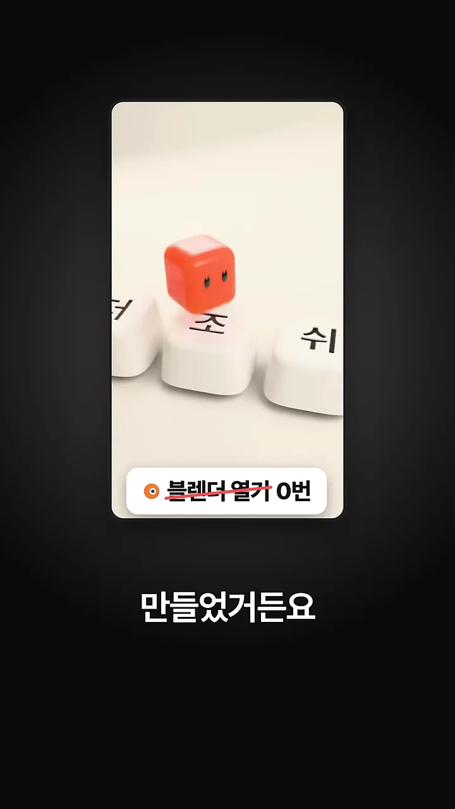
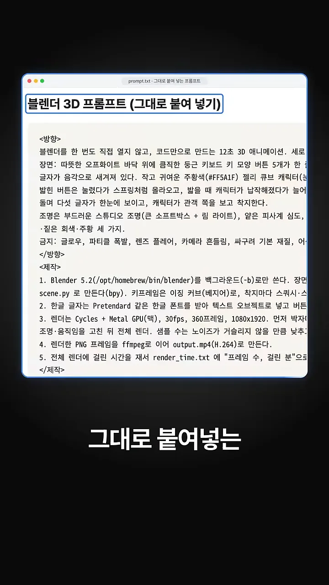
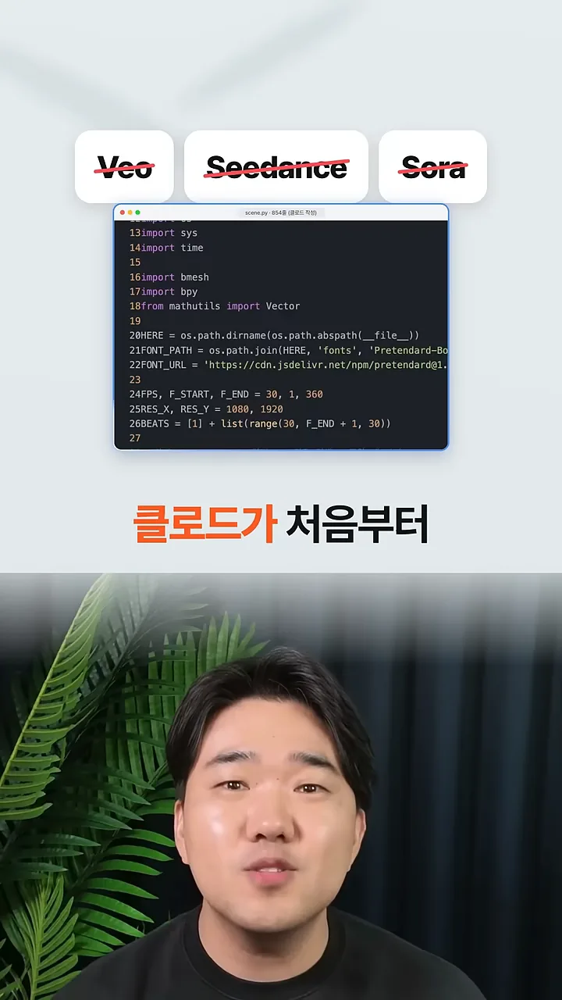
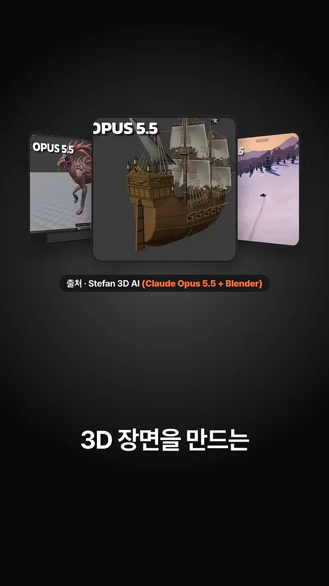
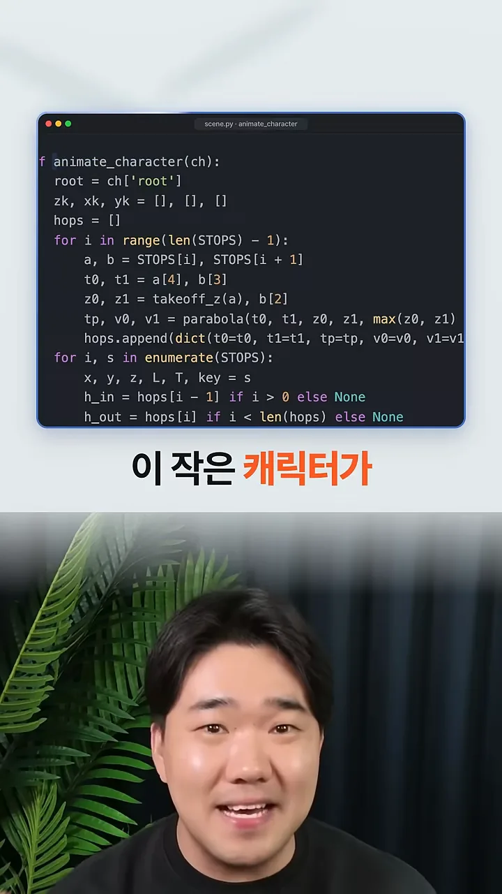
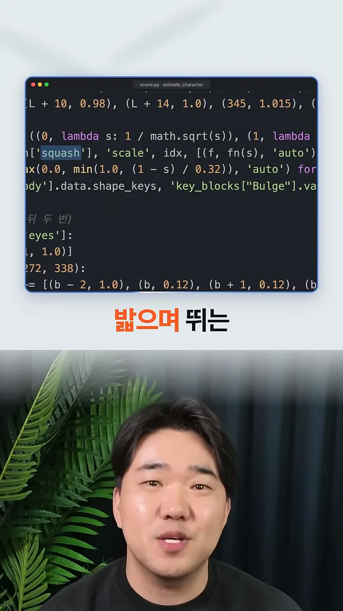
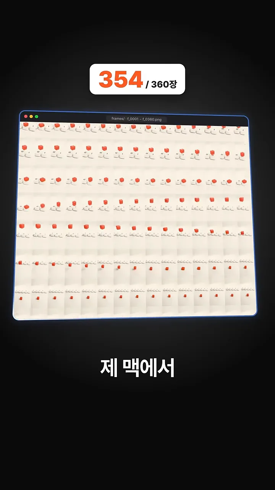
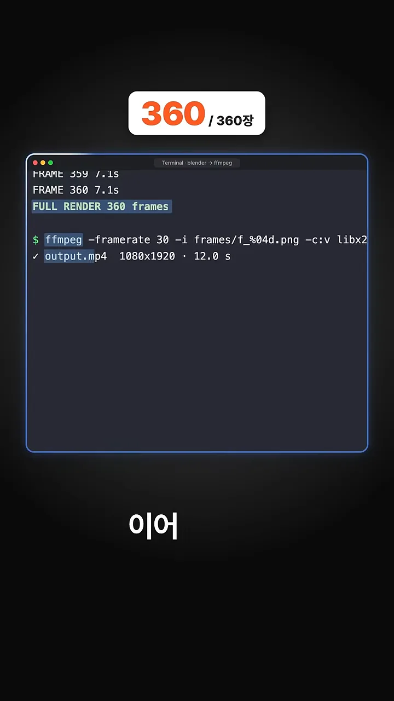

블렌더를 안 열고 만든 3D 애니메이션
영상 첫 장면은 결과물부터 보여 줘요. 둥근 키보드 키 모양 버튼에 '빌', '더', '조', '쉬' 같은 한글이 새겨져 있고, 주황색 큐브 캐릭터가 그 위를 뛰어다녀요. 아래쪽 배지에는 '블렌더 열기'에 줄을 긋고 '0번'이라고 적어 놨어요. 블렌더 화면을 한 번도 띄우지 않았다는 뜻이에요.

곧이어 이 장면을 만든 프롬프트가 지나가요. 창 제목은 prompt.txt이고, 본문은 무엇을 만들지 적은 <방향>과 어떻게 만들지 적은 <제작> 두 덩어리로 나뉘어요. 오른쪽 끝이 화면 밖으로 잘려 있어서 문장 몇 개는 끝까지 읽을 수 없어요.

화면에서 읽히는 부분만 정리하면 이래요.
| 구분 | 프롬프트에 적힌 내용 |
|---|---|
| 목표 | 블렌더를 직접 열지 않고 코드만으로 만드는 12초 3D 애니메이션, 세로 화면 |
| 장면 | 오프화이트 바닥 위 둥근 키보드 키 버튼 5개, 버튼마다 한글 글자 |
| 캐릭터 | 주황색(#FF5A1F) 젤리 큐브. 밟힌 버튼은 눌렸다가 스프링처럼 올라오고, 캐릭터는 착지할 때 납작해졌다가 늘어나요 |
| 조명 | 부드러운 스튜디오 조명(소프트박스 + 림 라이트), 얕은 피사계 심도 |
| 금지 | 글로우, 파티클 폭발, 렌즈 플레어, 카메라 흔들림, 싸구려 기본 재질 |
| 제작 1 | Blender 5.2를 백그라운드(-b)로만 써요. 장면은 scene.py(bpy)로 만들고, 키프레임은 이징 커브(베지어)로 줘요 |
| 제작 2 | 한글은 Pretendard 같은 한글 폰트를 받아 텍스트 오브젝트로 넣어요 |
| 제작 3 | Cycles + Metal GPU(맥), 30fps, 360프레임, 1080×1920. 먼저 샘플로 확인하고 조명·움직임을 고친 뒤 전체 렌더 |
| 제작 4 | 렌더한 PNG(Portable Network Graphics) 프레임을 ffmpeg로 이어 output.mp4(H.264)로 만들어요 |
| 제작 5 | 전체 렌더에 걸린 시간을 재서 render_time.txt에 적어요 |
숫자가 서로 맞물려 있어요. 30fps로 360프레임을 뽑으면 정확히 12초가 돼요. 금지 목록을 따로 둔 것도 눈여겨볼 만해요. AI가 '멋있게' 만들려고 효과를 덧칠하는 걸 미리 막는 장치예요.
클로드가 코드로 짠 장면과 움직임
조쉬는 Veo, Seedance, Sora 이름에 빨간 줄을 긋고, 그 아래로 클로드가 쓴 코드를 보여 줘요. 창 제목에 'scene.py · 854줄 (클로드 작성)'이라고 적혀 있어요. 사람이 아니라 클로드가 처음부터 쓴 파일이라는 뜻이에요.

FPS, F_START, F_END = 30, 1, 360과 25번째 줄 1080, 1920이 프롬프트의 숫자를 그대로 옮긴 부분이에요.
영상 00:12에서 보기
코드 맨 위에서 bpy와 bmesh를 불러오고, Pretendard 폰트 경로와 내려받을 주소(jsDelivr)를 정해 둬요. BEATS는 1번 프레임과 30, 60, 90…처럼 30프레임(1초)마다 찍히는 박자 목록이에요. 코드가 이 박자를 어디에 쓰는지는 화면에 나오지 않아요.
잠깐 같은 방식으로 만든 다른 사례도 지나가요. 범선, 거리 풍경, 눈밭 같은 장면인데, 아래에 '출처 · Stefan 3D AI (Claude Opus 5.5 + Blender)'라고 밝혀 놨어요. 조쉬의 작품이 아니라 이 방식이 키보드 장면 하나에 그치지 않는다는 걸 보여 주는 예시예요.

뛰는 움직임도 코드로
캐릭터가 버튼을 하나씩 밟는 움직임은 animate_character 함수가 만들어요. 버튼 위치 목록 STOPS를 앞에서부터 두 개씩 짝지어, 이륙 높이와 착지 높이 사이를 parabola로 이어요. 그렇게 나온 점프 한 번 한 번을 hops에 쌓아 두고, 버튼마다 들어오는 점프와 나가는 점프를 꺼내 써요.

착지할 때 찌그러지는 느낌은 다른 부분에서 만들어요. 강조 표시된 squash 값을 'scale'에 키프레임으로 넣고, 셰이프 키 Bulge로 몸통을 부풀려요. 프롬프트가 말한 '착지할 때 납작해졌다가 늘어나는' 움직임, 곧 스쿼시 앤 스트레치를 코드로 옮긴 거예요.

squash와 Bulge 두 군데가 캐릭터를 젤리처럼 보이게 하는 부분이에요.
영상 00:20에서 보기
렌더링하고 영상으로 잇기
스크립트가 장면을 다 만들면 블렌더가 프레임을 한 장씩 렌더링해요. 화면 위쪽 배지가 '354 / 360장'까지 올라가 있고, 아래 격자에는 캐릭터 위치가 조금씩 다른 프레임 썸네일이 빼곡하게 쌓여 있어요. 조쉬는 이 작업을 자기 맥에서 돌렸다고 해요.

마지막 프레임이 끝나면 터미널에 FULL RENDER 360 frames가 찍혀요. 이어서 ffmpeg가 frames/f_%04d.png 이미지들을 초당 30장으로 이어 붙이고, 결과로 output.mp4가 1080×1920, 12.0초로 나와요. 이게 영상 처음에 본 바로 그 애니메이션이에요.

전체 흐름을 한 장으로 모으면 이래요. 사람이 손대는 건 맨 앞의 프롬프트뿐이에요.
flowchart LR A["prompt.txt
방향 + 제작"] --> B["클로드
scene.py 854줄 작성"] B --> C["블렌더 백그라운드
Cycles + Metal"] C --> D["PNG 360장
30fps · 1080×1920"] D --> E["ffmpeg
output.mp4 · 12초"]